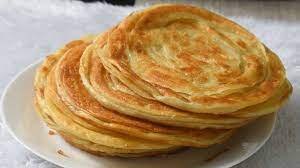

Paratha

About Paratha
Parathas are one of the most popular unleavened flatbreads in the Indian subcontinent, made with wheat dough from finely ground wholemeal (atta) and/or white flour (maida), sometimes incorporating egg or ghee.
Go Back